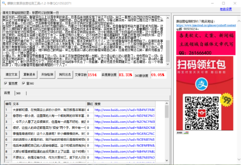

《水浒传》中整天不拘小节的是他,看的最清楚的也是他!
大家都知道，在我国这么多的小说中，有四部是非常著名的，其中《水浒传》是比较有意思的一部小说，这里面的人每一个都刻画的非常丰富，他们之间的故事也是很有意思，令不少人看了之后很喜欢，但是有一点是不好的，就是里面的人物最后的归宿都不是很好，这些人的命运都是因为“招安”两个字，其中有一个人整天大大咧咧，但是他看事情是最透彻的！这个人是谁呢？听小编慢慢说来。
宋江是这些人的大哥，当然，他说的话部分人都是听的，刚开始的时候他只是指挥将领们去打仗，并没有说别的，但是他后来说要把自己的人招安给朝廷，这个时候当然有许多的人不愿意，要知道这些人，大部分都是被朝廷逼的走投无路才上了这里，这个时候宋江突然说招安，肯定有很多人不愿名义，但是没有办法，作为大哥宋江，底下的人只好听他的，底下的人也没有多想，宋江说这是为了每个人的前途考虑，其他人也就不说话了，但是这个时候有一个人看出了其中的门道，知道招安这个事情不简单，这个人就是鲁智深。
我们先来说一下鲁智深这个人，他原本是在一个地方当官，这样的日子也是无忧无虑的，相当于维护社会治安，很长一段时间街上都没有什么事情，他也一直很悠闲的每天在大街上巡逻，但是有一天发生了一件事情，一位卖猪肉的调戏一位女子，并且打伤了这位女子的父亲，这件事正好发生在自己的管辖范围之内，他也是非常的气氛，在与卖猪肉的争辩了很久之后，卖猪肉的依然不知道悔改，于是鲁智深就三拳把他打死了，一个当官的杀了人，这在当时可是要杀头的，他觉得自己躲不过了，于是就去当了和尚，之后也是练就了一身本领，但是后来和尚也没有做下去，于是后面就遇到了杨志等人，就和他们一起在二龙山当起了头领，后来就遇到了宋江等人，并且跟随宋江一起上了梁山。
平常的鲁智深一直都是大大咧咧打一个人，做人非常的爽快，有什么事他都帮，并且打仗的时候，他是打的最嗨的一个人，有好长的一段时间，鲁智深在山上过得非常的快活，但是后来他就发现了宋江不对劲，宋江一直想让自己的这些兄弟招安，其实这个时候鲁智深还没有想的那么明白，他就觉得，自己是被官府逼上来的，干嘛还要回去，当时宋江提出这个想法之后，武松是第一个反对的，然后接着句是鲁智深，但是这并没有改变最后被招安的命运。
在招安之后朝廷让宋江的部队去攻打方腊的部队，方腊这个时候被朝廷说成了反贼，但是鲁智深却说方腊不能成为反贼，这是什么原因呢？原因是当时在位的皇帝非常的无能，使百姓的生活非常困难，百姓根本生活不下去了，最重要的一点是，每个地方的官吏还压榨百姓，让百姓交很多的钱，百姓根本没有钱给官府，这个时候就出现了农民造反的现象，这个现象也是很正常的，百姓连生活都不能进行下去了，活着还有什么意义，还不如把这个朝廷推翻呢！方腊正好是他们中的头领，这个时候朝廷镇压不了，所以梁山被招安之后，让他们以镇压反贼的名义去攻打方腊，朝廷也是非常的精明了。
之后虽然把方腊打败了，但是梁山自己的军队损失惨重，根本没有剩下几个人，这个时候鲁智深也是想明白了，在朝廷做事是根本没有出路的，宋江刚开始召集这么多人也就是为了自己的利益，这么多人完全就是宋江一个人报效朝廷的条件，这个时候只有鲁智深自己看透了，所以鲁智深在打败方腊之后，没有选择和宋江一起去朝廷做官，他知道宋江只是为了自己，根本不会把其他人放在眼里，他只顾自己的利益，宋江也是苦口婆心的劝鲁智深随自己去，但是他没有这么做，最终他看透了一切，在一个晚上圆寂了。
小编认为，其实鲁智深早就看透了这一切，从宋江开始想招安的那一刻起，这个梁山的人的心就散了，他也明白了一切，在这是没有出路的，但是自己又没有别的地方去，所以只能在梁山凑合着，宋江只是为了自己，在征讨方腊之后，梁山的人基本上都死了，剩下的也没几个了，武松也是在这场战争中失去了一条胳膊，最终也是没有跟随宋江一起去朝廷，在一个寺庙出家了，可以说鲁智深是看的最清楚的一个人了。